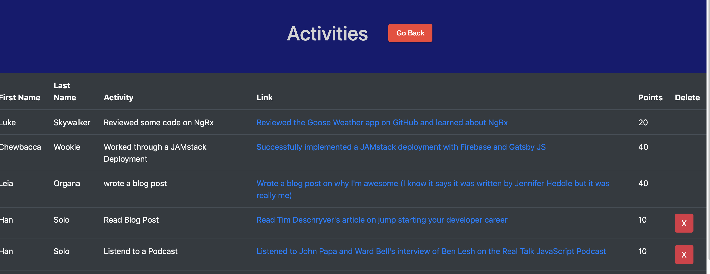

Viewing Activity
Once activities have been added, they will appear in the view activity screen.
The table that is presented shows what the activity was and provides a link to access it online. This is particuarly convenient when you consider links to podcasts and YouTube videos.
When a score is cleared (scoring), these activities remain listed here so that players can refer back to them later.
As a user, you can delete any activity you've created. This is good in the case that you accidentally create somthing or misspell a name etc.
